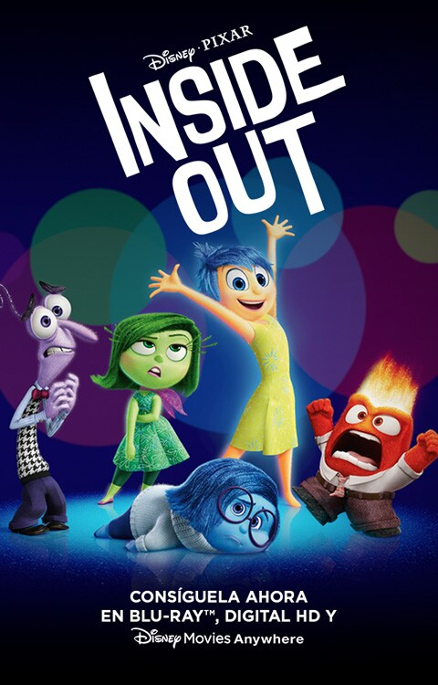

-

Noticias para los mas peques
Disney y Pixar han emocionado a los fanáticos de la película Inside-Out al lanzar el tan esperado trailer de IntensaMente 2. Esta secuela, programada para llegar a los cines en 2024, promete continuar explorando las complejidades de la mente y las emociones de Riley mientras enfrenta los desafíos de la adolescencia.
-

Y en mas estrenos esta semana...
A decir verdad el reestreno en cines de Tiburón era ya algo anunciado. Desde el año pasado Universal realizó una alianza con la compañía IMAX en la cual se anticipó que ambos clásicos de Spielberg llegarían al gran formato y a las salas de cine de nueva cuenta.
-
El terror se apodera de este mes

La copia que se proyectará será la versión extendida Director’s Cut, reestrenada en el año 2000 con sonido e imagen remasterizados y supervisados por el director. Además, incluye escenas icónicas que no aparecían en el metraje original, como la estremecedora escena de la escalera.
-
Se realizo prueba de cohete a Marte

Starship, el cohete que podría llevar humanos a Marte, explota en prueba. Se planea que Starship vuele a Marte tan pronto como 2024, pero el primer ensayo de este cohete de 120 metros de altura explotó 4 minutos después del despegue.
-
Incendio incontrolable
Se registra incendio forestal en bosque de chapultepec, autoridades se encuentran investigando el motivo del incendio, personal de bomberos se encuentra en el area sofocando el incendio, sin embargo este se sigue extendiendo a mas areas.